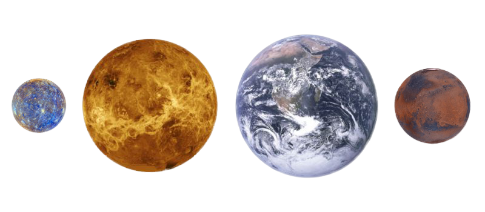

Marte es el cuarto planeta en orden de distancia al Sol y el segundo más pequeño del sistema solar, después de Mercurio. Recibió su nombre en homenaje al homónimo dios de la guerra de la mitología romana (Ares en la mitología griega), y también es conocido como «el planeta rojo» debido a la apariencia rojiza que le confiere el óxido de hierro predominante en su superficie. Marte es el planeta interior más alejado del Sol. Es un planeta telúrico con una atmósfera delgada de dióxido de carbono, y tiene dos satélites pequeños y de forma irregular, Fobos y Deimos (hijos del dios griego), que podrían ser asteroides capturados similares al asteroide troyano (5261) Eureka. Sus características superficiales recuerdan tanto a los cráteres de la Luna como a los valles, desiertos y casquetes polares de la Tierra. El periodo de rotación y los ciclos estacionales son similares a los de la Tierra, ya que la inclinación es lo que genera las estaciones. Marte alberga el Monte Olimpo, la montaña y el volcán más grande y alto conocido en el sistema solar, y los Valles Marineris, uno de los mayores cañones del sistema solar. La llana cuenca Boreal en el hemisferio norte cubre el 40% del planeta y puede ser característica de un gigantesco impacto. Aunque en apariencia podría parecer un planeta muerto, no lo es. Sus campos de dunas siguen siendo mecidos por el viento marciano, sus casquetes polares cambian con las estaciones e incluso parece que hay algunos pequeños flujos estacionales de agua.10 Las investigaciones en curso evalúan su habitabilidad potencial en el pasado, así como la posibilidad de existencia actual de vida. Se planean futuras investigaciones astrobiológicas, entre ellas la Mars 2020 de la NASA y la ExoMars de la ESA. El agua en estado líquido no puede existir en la superficie de Marte debido a su baja presión atmosférica, que es unas 100 veces inferior a la de la Tierra, excepto en las zonas menos elevadas durante cortos periodos de tiempo. Sus dos casquetes polares parecen estar formados en su mayor parte por agua. El volumen de agua helada del casquete polar sur, si se derritiera, sería suficiente como para cubrir la superficie planetaria al completo con una profundidad de 11 metros (36 pies).
| Característica | Jupiter |
|---|---|
| Distancia orbital (km) | 227.943.824 |
| Radio ecuatorial (km) | 3.389 |
| Volumen (km3) | 163.115.609.799 |
| Masa (kg) | 641.693 x1018 |
| Densidad (g/cm3) | 3.934 |
| Gravedad en superficie (m/s2) | 3,71 |
| Velocidad de escape (km/h) | 18.108 |
| Duración del día | 24 horas, 37 minutos |
| Duración del año | 225 días terrestres |
| Velocidad de su órbita alrededor del Sol (km/h) | 86.677 |
| Composición de la atmósfera (exosfera) | Dióxido de Carbono, Nitrógeno y Argón |
| Lunas descubiertas | 2 |
Marte tiene una órbita elíptica, al igual que la Tierra, por eso la posición y la distancia entre ambos planetas no es siempre es la misma. En promedio, Marte está a 230 millones de kilómetros de distancia de la Tierra. Lo más alejado que estuvo, según los cálculos científicos, fue de 402 millones de kilómetros y lo más cerca fue de 57 millones de kilómetros de distancia. El planeta rojo tarda 2 años terrestres en hacer el movimiento de traslación y 24 horas y 37 minutos en hacer el movimiento de rotación. Otra similitud con el planeta terrestre es el grado de inclinación de su eje, de 25 grados (contra los 23,4 grados de la Tierra). Tiene un diámetro de 6.780 kilómetros (casi la mitad que el de la Tierra) y se encuentra a 228 millones de kilómetros de distancia del astro luminoso.Marte se caracteriza porque tiene estaciones climáticas bien diferenciadas, casquetes polares, valles, cañones y volcanes, como los Valles Marineris (un sistema de cañones que se extiende a lo largo de un vasto territorio de la superficie).Además, en Marte se encuentra el Monte Olimpo, el volcán más grande del Sistema Solar hasta ahora detectado, que es tres veces más alto que el Everest, la montaña más grande de la Tierra. Tiene dos pequeños satélites, Fobos y Deimos, que fueron descubiertos en 1877. Se caracterizan por tener poca masa y una forma de elipsis poco definida debido a la leve fuerza de gravedad que poseen, que no permite que adquieran una forma esférica como la mayoría de las lunas del Sistema Solar.Fobos es el satélite más grande y los cálculos científicos estiman que se estrellará contra el planeta rojo dentro de unos 50 millones de años.
La temperatura de Marte oscila entre los 20 º C y los -140º C. Esas grandes diferencias de temperatura se deben a que la atmósfera es demasiado ligera como para mantener el calor que recibe del Sol.Ese contraste entre el clima del día y de la noche provoca vientos muy intensos que pueden desencadenar en tormentas de polvo. Una vez que las tormentas cesaron, pueden pasar meses hasta que todo el polvo se asiente. |
Marte es un planeta de composición rocosa con una corteza que oscila entre los 10 y los 50 kilómetros de profundidad en la que abundan minerales, como el silicato, y nutrientes como el magnesio, sodio, potasio y cloro (característicos de los suelos terrestres que permiten el crecimiento de las plantas).El color rojizo se debe al óxido de hierro que abunda en la superficie. A mayor profundidad predomina el hierro y en su denso núcleo se encuentran diversos metales como el hierro, níquel y azufre. Su superficie de Marte presenta muchas semejanzas con el relieve terrestre como los volcanes, los cráteres de impacto, los movimientos de la corteza y las condiciones atmosféricas (como tormentas de polvo), que caracterizan el paisaje marciano.No tiene un campo magnético global, pero las áreas de la corteza en el hemisferio sur están muy magnetizadas y podrían ser rastros de un campo magnético mayor, que dataría de unos 4 millones de años atrás. Según los resultados de diversas exploraciones, los científicos sostienen que Marte pudo haber tenido un pasado acuoso con antiguas redes fluviales, deltas y lagos y incluso que el planeta puede haber experimentado grandes inundaciones hace unos 3.500 millones de años.En la actualidad se corroboró que existe agua en el planeta rojo, pero la atmósfera es demasiado delgada para que el agua se mantenga en estado líquido sobre la superficie.
La atmósfera de Marte es delgada y tenue, por lo que no ofrece mucha protección contra los impactos de meteoritos, asteroides o cometas. Está compuesta en un 90% por dióxido de carbono y en menor medida por nitrógeno y argón.El vapor de agua es escaso, aunque suficiente como para que se formen algunas nubes y nieblas de consistencia leve, parecidas a las que hay en la Tierra. Sin embargo, no se forman precipitaciones por las condiciones de presión y de temperatura.
Tamaños comparativos de los planetas terrestres, Mercurio a la izquierda, Venus, Tierra y Marte.
Los científicos sostienen que para que se pueda encontrar vida en un cuerpo celeste debe existir la disponibilidad de agua en estado líquido. Evidencias obtenidas de las misiones espaciales demuestran que Marte tuvo un extenso océano en el hemisferio norte, hace unos 4.300 millones de años (que podría haber existido durante 1.500 millones de años).Ese pasado acuoso junto con una atmósfera más densa y consistente podrían haber sido condiciones favorables para el desarrollo de la vida. En la actualidad no se está buscando la presencia de seres vivos, sino que se investigan señales de vida pasada en épocas en que el planeta rojo era más cálido, estaba cubierto de agua y presentaba condiciones propicias para el desarrollo de la vida.
Marte es uno de los cuerpos celestes más explorados de nuestro Sistema Solar, debido a su cercanía con la Tierra. Existen registros (que datan de más de 4.000 años) de que los egipcios plasmaron el recorrido y los movimientos que hacía el planeta rojo. La primera nave espacial enviada a Marte fue Mars 1, que logró sobrevolar a una distancia de 193.000 kilómetros sin obtener información del planeta. En 1965 se lanzó la sonda espacial Mariner 4, que logró realizar la primera transmisión de datos.En 1969 las misiones Mariner 6 y 7 permitieron observar los cráteres de Marte, que tenían similitudes con el satélite de la Tierra. Finalmente, en 1971 la Mariner 9 fue la primera sonda que pudo situarse en la órbita marciana y que pudo monitorear una inmensa tormenta de polvo, entre otros datos relevantes. En la actualidad, la NASA tiene dos módulos de aterrizaje en la superficie marciana y tres naves espaciales en órbita:
La ESA también tiene un módulo de aterrizaje en una zona de llanura plana y dos sondas espaciales en la órbita de Marte:
Tanto la NASA como la ESA tienen planes de enviar nuevas misiones durante 2020 para conocer más detalles del planeta y especialmente corroborar las sospechas de los científicos de que hace miles de millones de años Marte era mucho más húmedo y cálido, con una atmósfera más espesa.